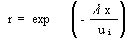
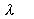
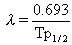

4.5 RADIOACTIVE DECAY
Radioactive materials with short half-lives may
undergo significant radioactive decay while still airborne. The radioactive
decay plume depletion term (r) (see Equation 51) is based on the following
expression:

(59)
where
 = first-order decay coefficient (s-1)
x = downwind distance (m).
The term ui is as defined for Equation 50. EPA (1979) relates the decay coefficient to the contaminant half-life Tp1/2 (s) using

(60)